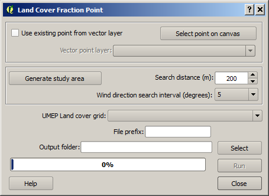

The Land
Cover Fraction (Point) plugin calculates land cover fractions from a point
location based on a land cover raster grid. The land cover fractions included in
UMEP are:
-
Paved (1)
-
Buildings
(2)
-
Evergreen
trees (3)
-
Deciduous
trees (4)
-
Grass (5)
-
Bare soil
(6)
-
Water (7)
A land
cover grid suitable for the processor in UMEP can be derived using the
Land Cover Classifier. The fraction will vary depending on what angle
(wind direction) you are interested in. Thus, this plugin is able to derive the
land cover fractions for different directions.
The Image
Morphometric Parameters (Point) is located at
UMEP -> Pre-Processor -> Urban Land Cover -> Land Cover Fraction (Point).
When you
run plugin, you will see the dialog shown below. It consists of three sections.
The top section let you select a point on the map canvas by either clicking at a
location or by selecting a ´n existing point from a point vector layer. The next
section set the parameters for the area of interest where the morphometric
parameters are calculated. You also set the search interval in degrees. The last
section lets you to specify the input data regarding land cover fraction raster
as well as specifying output and for running the calculations.

Click on
this button to create a point from where the calculations will take place. When
you click button, the plugin will be disabled until you have clicked the map
canvas.
Tick this
in is you want to use a point from a vector layer that already exist and are
loaded to the QGIS-project. The
Vector point layer dropdown list
will be enabled and include all point vector layer available.
This
button is connected to the Search distance (m) and when you click the button a
circular polygon layer (Study area) is generated. This is the area that will be
used to obtain the morphometric parameters.
This
decides the interval in search directions for which the morphometric parameters
will be calculated.
A integer
raster land cover grid (e.g. geoTIFF) consisting of the various land covers
specified above.
A prefix
that will be included in the beginning of the output files.
A folder
where result will be saved.
This
starts the calculations.
This
button closes the plugin.
Two
different files are saved after a successful run. The first one includes
anisotropic result where the land cover fractions for each wind direction as
specified are included. The second one includes isotropic results where all
directions are integrated into one value for each land cover.